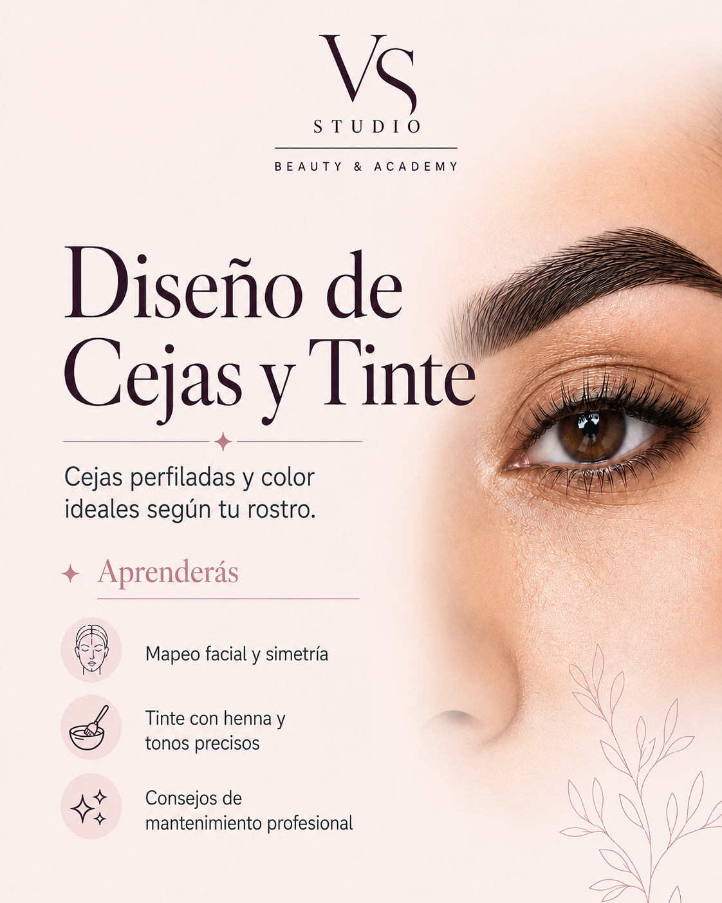

Formación práctica
Aplicación guiada del diseño, medición y tinte.
WhatsApp, Instagram, Treatwell y Google Maps se abren en una pestaña nueva.
Formación profesional en Madrid
Aprende a diseñar, medir y definir cejas mediante una formación práctica de 8 horas con diseño personalizado y aplicación de tinte.
Consulta próximas fechas y plazas disponibles.

Una formación cuidada
Aplicación guiada del diseño, medición y tinte.
Un máximo de cuatro alumnas para recibir correcciones individuales.
Material utilizado durante la formación práctica.
Diploma al finalizar la formación.
Diseño y precisión
Aprende a crear diseños de cejas adaptados a las facciones y proporciones de cada rostro, trabajando la medición, la simetría, la definición y la aplicación correcta del tinte.
Esta formación presencial está orientada a conseguir resultados naturales, comerciales y personalizados, con un protocolo claro que puedas incorporar a tus servicios profesionales.
8 horas de formación
Una secuencia progresiva que combina fundamentos, demostración y práctica.
Diagnóstico de las cejas y diseño adaptado a las proporciones del rostro.
Referencias para construir un diseño equilibrado y corregir visualmente.
Elección de forma, grosor y tono según cada caso.
Preparación y aplicación correcta del color para definir el diseño.
Revisión de la simetría y detalles finales para un resultado cuidado.
Aplicación acompañada y revisión de los errores más frecuentes.
Todo preparado
La formación reúne lo necesario para practicar de forma guiada y recibir atención cercana.
Nivel inicial y profesional
Descubre todas las formaciones disponibles en VS Studio Academy.
Antes de reservar
No. El curso es apto para principiantes y profesionales.
La formación tiene una duración total de 8 horas.
El precio del Curso de Diseño de Cejas y Tinte es de 180 €.
Sí. El material utilizado durante la formación está incluido.
Sí. Al finalizar la formación se entrega un diploma.
El grupo es reducido, con un máximo de 4 alumnas.
Aprenderás análisis facial, mapeo, simetría, selección de forma y color, aplicación de tinte y acabado.
Las próximas convocatorias y plazas disponibles se consultan directamente mediante WhatsApp.
VS Studio Academy
Consulta próximas fechas y disponibilidad de plazas.